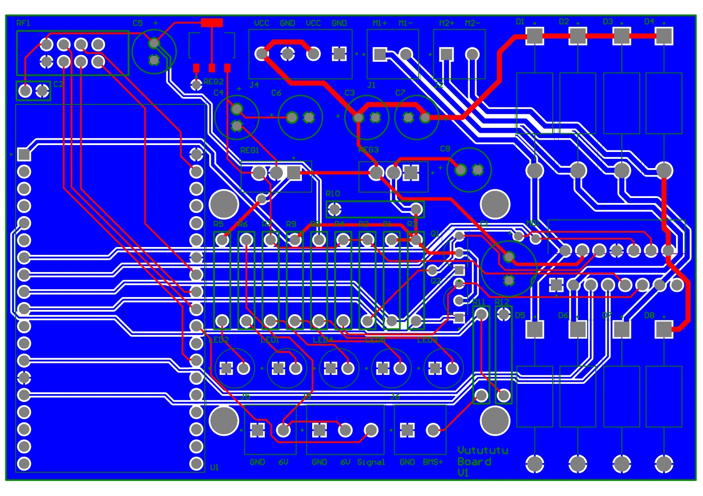
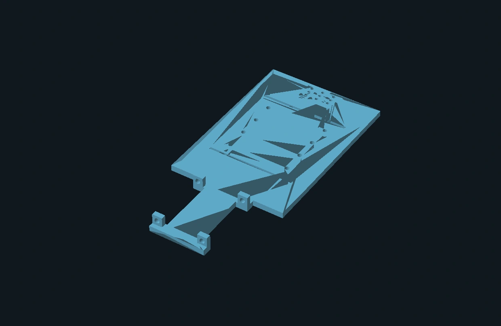
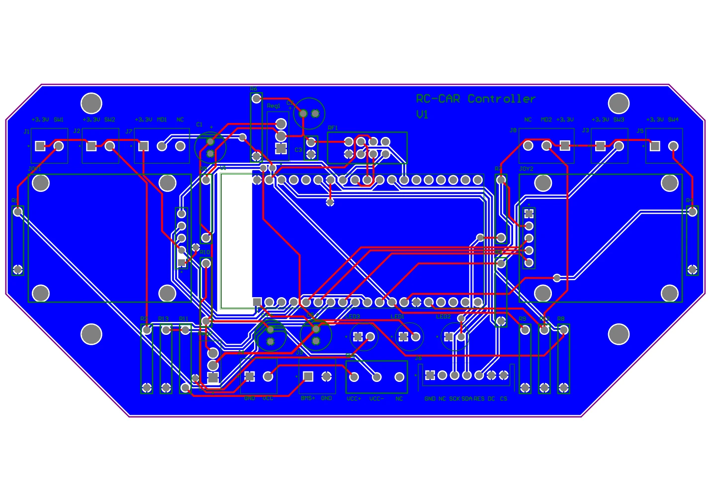
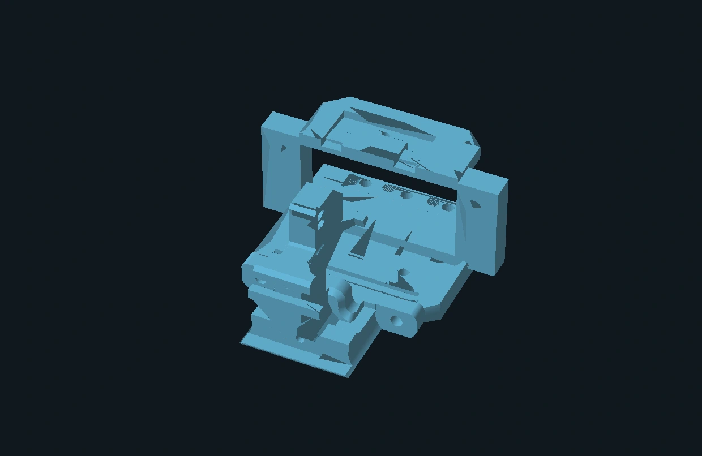

HARDWARE / 01
Vehicle electronics
Custom ESP32-based PCB with an L298N motor driver, servo interface, power distribution and nRF24L01 communication.
PCB assembled · validation pending
IN DEVELOPMENT · 2026
RC-CAR RWD is a collaborative remote-controlled vehicle project bringing custom PCB design, embedded firmware and 3D-printed mechanical systems together.
Two developers. One integrated engineering project.

01 / TECHNICAL SYSTEMS
Explore the electronics, control architecture and mechanical development behind the prototype.

HARDWARE / 01
Custom ESP32-based PCB with an L298N motor driver, servo interface, power distribution and nRF24L01 communication.
PCB assembled · validation pending

HARDWARE / 02
Dual joystick inputs, mode switches, ESP32 and a dedicated radio supply. Display and battery telemetry integration are under development.
PCB assembled · validation pending
FIRMWARE / 03
C++ firmware for wireless command transfer, joystick mapping, PWM motor control and steering. Telemetry and link-loss protection are development goals.
Subsystem tests · integration pending

MECHANICAL / 04
Fusion 360 chassis adaptations, front steering and suspension studies, and a proposed single-motor rear drivetrain with a differential.
Mechanical development ongoing
02 / DEVELOPMENT LOG
Design iterations and bench testing are part of the engineering story.
Initial wireless servo-control experiments using ESP32, Arduino and nRF24L01.
Vehicle and controller PCB designs, motor-control experiments and RF troubleshooting.
Exploring chassis integration and a single-motor differential drivetrain.
PCBs assembled and soldered. Chassis assembly and integrated testing are the next milestones.
Performance figures will be published after measurement. No full driving test is claimed at this stage.
03 / COLLABORATION
A shared project identity, with individual contributions documented as development progresses.
Individual contributions and profile to be added.
Individual contributions and profile to be added.
Mechanical reference-model credits and applicable licensing details will be added before public release of design files.